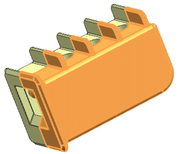
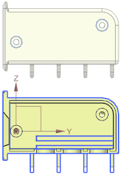
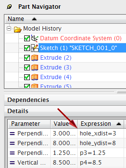
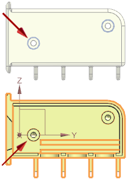

Relocate the linked mirror part and then modify the source part
-
On the Assemblies toolbar, click Move Component
 .
.
-
In the Move Component dialog box, in the Transform group, ensure that Motion is set to Dynamic.
-
Select asm2_85_housing_rt and click the middle mouse button.

-
Drag the ZC translation handle approximately 40 mm in the negative direction to move the selected object as shown and click OK.

-
Make asm2_85_housing_rt the work part.
-
Right-click in the background of the graphics window and choose Orient View→Right.

-
In the Part Navigator, select Sketch (1).
-
In the Details panel of the Part Navigator, change the hole_xdist value to 9.

The mounting stud in the source part and the corresponding counterbore hole in the linked mirror part move.

-
Close all parts without saving.